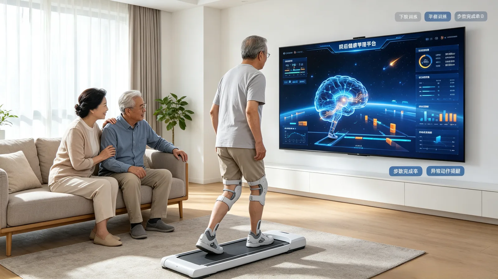
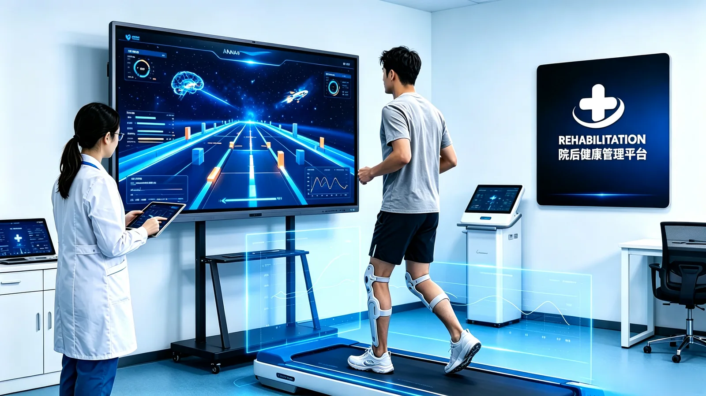
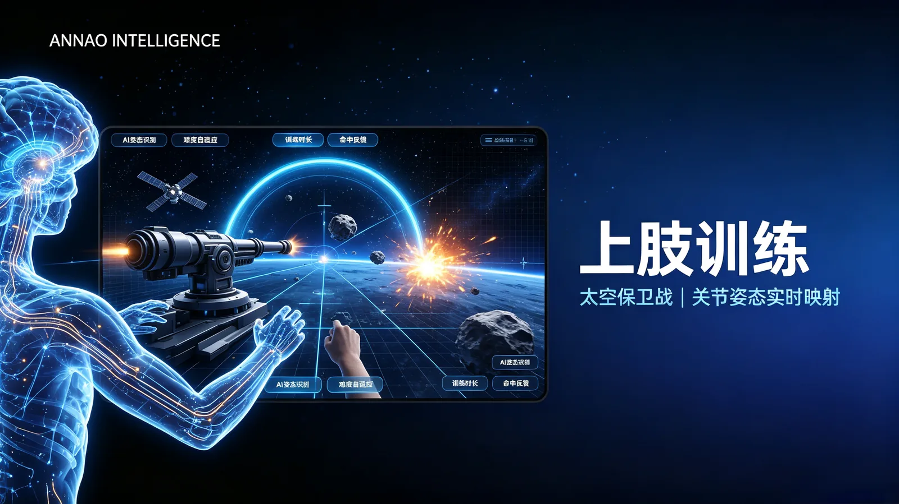
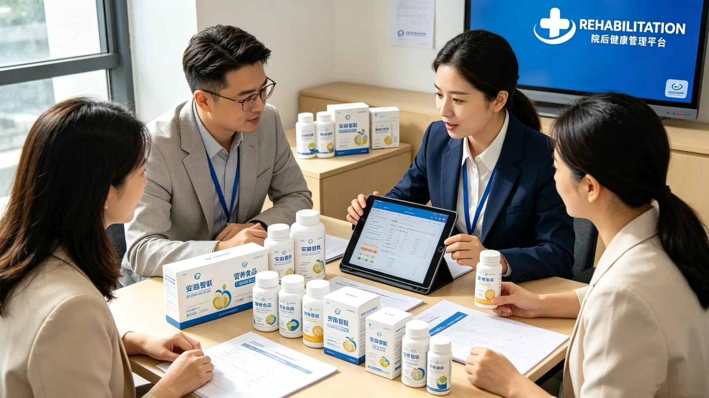

No dedicated hardware
Use a phone or computer camera to bring training into a familiar environment.

AI-POWERED · CONNECTED REHABILITATION
Intelligent rehabilitation, connected through every stage.
AI visual assessment, gamified training and expert digital twins bring professional support from the clinic into everyday life.
01 / OUR VALUE
Fewer equipment barriers. A more connected rehabilitation journey.

Use a phone or computer camera to bring training into a familiar environment.
Connect motion perception with rehab knowledge to support assessment and care.
Turn movements into game interactions, with feedback for every effort.
Connect assessment, plans, training and follow-up across settings.
02 / CONNECTED SOLUTIONS
Connected experiences for patients, professionals and organizations.
Assessment, engaging exercises and everyday support for rehabilitation at home.
Explore solutionBring home training records together to support plan reviews and ongoing follow-up.
Explore solutionConnect in-clinic assessment with home training, departmental workflows and patient records.
Explore solution03 / THE TECHNOLOGY
Four core capabilities connect motion perception with ongoing care.


04 / BUILT TO CONNECT
Technology shaped around real needs, with a simpler experience for everyone involved.
Training through everyday cameras
Patients · Experts · Organizations
Assess · Train · Support · Protect
From the clinic to everyday life
Explore rehabilitation aids, care supplies, medical equipment, specialized nutrition and in-home services as part of a connected care journey.

Products and services across the care journey05 / LATEST PERSPECTIVES
Selected perspectives on stroke rehabilitation, AI training and care beyond the clinic.

06 / PEOPLE & PURPOSE
Working toward rehabilitation that is more accessible and more connected.
Founder · Connecting technology with rehabilitation needs
Real care scenarios guide product priorities and scope.
Turning AI capabilities into practical everyday experiences.
OPEN TO COLLABORATION
07 / LET’S MAKE PROGRESS
For care providers, rehabilitation teams and industry partners.
Let’s explore what we can make possible together.